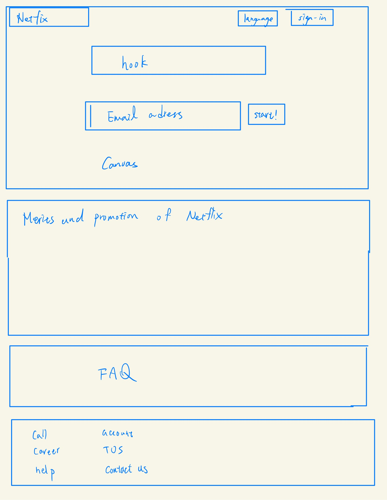

-
Using the favorite website you chose in homework 1, create a wireframe for one page of it using pen/paper, PowerPoint, or any your tool of choice. (use the 'img' tag!) Make sure to let us know what the name of your website is (Use the 'p' tag!)
Netflix
 -
Try to improve the website you've chosen, and create a redesigned wireframe of one page for the same website using the principles of visual hierarchy that you learned from the article.

-
What is the goal of the website? Who is it intended for? How does the design accomplish this? Write 2-3 sentences answering these questions. (Use the 'p' tag again!)
The goal of thewebsite is to attract people's attention and subscribe to their product. It is intended for any customer that are interested in watching good qualities of movies online. It accomplished it by placing a big canvas of hot series as anyone enters the website and an obvious sign-up textbox to subscribe the membership.
-
Write 2-3 sentences about what problems your redesign addressed, and how it solved them.
I think the canvas is too big and empty. Also, I think the non-subscriber homepage does not have access of what Netflix really has. My redesign is adding a drop down menu that I can browse all movies that Netflix has within each categories. By doing so, any potential customer would subscribe because they know their watchlist is presented in Netflix.
NOTE: Make sure to include the wireframe images in the website and don't just put it in your assets folder!
Your wireframes should look something like this: